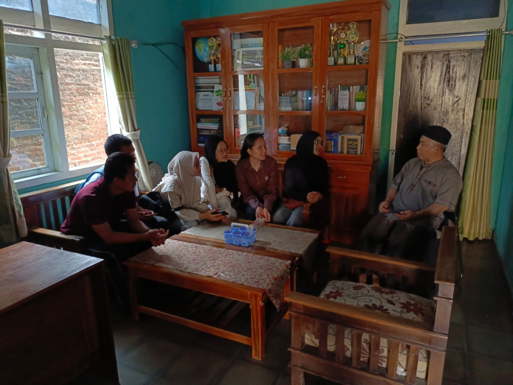

Berbagi Kasih,
Mengamalkan Pancasila
Dokumentasi komprehensif kegiatan aksi sosial terpadu kolaborasi mahasiswa Program Studi Informatika (Fakultas Teknik) dan Program Studi Biologi (Fakultas FMIPA). Menyatukan nalar rekayasa teknologi dan sains hayati dalam pengabdian nyata kepada masyarakat di panti asuhan.
0
Fakultas Kolaborator (FT & FMIPA)
0
Program Studi (Informatika & Biologi)
0
Panti Asuhan Kunjungan
0
Mahasiswa Kolaborator
Dedikasi Ilmiah untuk Kesejahteraan Bersama
Menghubungkan ruang kuliah dengan realitas sosial melalui aksi nyata yang berlandaskan integritas dan kepedulian.
Pendidikan Pancasila dan Kewarganegaraan bukan sekadar pemahaman teoritis di dalam ruang kelas, melainkan panggilan moral untuk berpartisipasi aktif dalam merespons kebutuhan lingkungan sekitar. Melalui inisiatif kunjungan panti asuhan ini, mahasiswa Fakultas Teknik dan Fakultas FMIPA menyatukan perspektif untuk memberikan kontribusi nyata.
“Kemajuan teknologi dan ketajaman logika sains hanya menemukan makna tertingginya saat dipersembahkan untuk memuliakan harkat kemanusiaan.”
Program ini dirancang tidak hanya untuk menyalurkan bantuan material, melainkan membangun dialog empati, mendampingi proses belajar anak-anak, dan menguatkan rasa kebersamaan sebagai sesama anak bangsa.
Materi Kegiatan & Pengamalan Pancasila
Penerapan nyata butir-butir nilai luhur Pancasila dalam aksi sosial terpadu di Panti Asuhan Hasbi Rabbi.
Kemanusiaan yang Adil dan Beradab
Mengakui persamaan derajat, hak, dan kewajiban asasi setiap manusia tanpa membeda-bedakan. Melalui kunjungan ini, mahasiswa menumbuhkan sikap saling mencintai sesama manusia dan menjunjung tinggi nilai kemanusiaan dengan memberikan perhatian tulus kepada anak-anak panti asuhan.
Poin Penerapan Lapangan:
- • Menjalin silaturahmi empati dengan pengurus dan adik-adik panti
- • Memberikan pendampingan emosional dan motivasi belajar ceria
- • Menghargai martabat sesama lewat kepedulian yang tulus
Keadilan Sosial bagi Seluruh Rakyat
Mengembangkan perbuatan luhur yang mencerminkan sikap kekeluargaan dan gotong royong. Mahasiswa turut andil dalam meringankan beban kebutuhan pokok dan memperluas akses edukasi bagi adik-adik yang membutuhkan.
Poin Penerapan Lapangan:
- • Penyaluran bantuan sembako dan paket donasi pokok
- • Edukasi literasi, numerasi dasar, dan motivasi berprestasi
- • Mengembangkan kepekaan sosial terhadap pemerataan kesejahteraan
Persatuan Indonesia
Menempatkan persatuan, kesatuan, serta kepentingan bangsa dan masyarakat di atas sekat keilmuan maupun golongan. Kolaborasi antara mahasiswa Informatika (FT) dan Biologi (FMIPA) merupakan bukti sinergi sains dan teknologi demi bakti sosial.
Poin Penerapan Lapangan:
- • Kolaborasi terpadu prodi Informatika (FT) × Biologi (FMIPA)
- • Gotong royong dalam perencanaan, survei, hingga pelaksanaan
- • Membangun kebersamaan hangat sebagai sesama anak bangsa
Ketuhanan & Semangat Musyawarah
Menjalankan aksi kepedulian sebagai manifestasi rasa syukur atas karunia Tuhan Yang Maha Esa, serta mengedepankan etika musyawarah mufakat dalam perizinan dan koordinasi bersama pihak panti asuhan.
Poin Penerapan Lapangan:
- • Koordinasi santun dan musyawarah kebutuhan bersama panti
- • Doa bersama memohon keberkahan dan masa depan cerah adik-adik
- • Memupuk keikhlasan dan integritas pengabdian mahasiswa
Tim Mahasiswa FT × FMIPA
Sinergi mahasiswa lintas disiplin ilmu yang mendedikasikan waktu dan tenaga demi keberhasilan pengabdian ini.
Tahapan Alur Kegiatan
Rangkaian proses kerja mulai dari perencanaan hingga evaluasi akhir kunjungan sosial pada Sabtu, 10 Oktober 2026.
Penyusunan Proposal, Perizinan, Survei & Belanja Kebutuhan
Rangkaian persiapan intensif tim mahasiswa kolaborator Informatika (FT) dan Biologi (FMIPA) sebelum pelaksanaan kegiatan:
- ✓ Penyusunan Proposal Kegiatan
- ✓ Perizinan Resmi & Silaturahmi Panti
- ✓ Survei Lokasi & Fasilitas
- ✓ Belanja Sembako & Snack Donasi
- ✓ Persiapan Alat & Perlengkapan Acara



.jpeg)
.jpeg)
.jpeg)

.jpeg)
Keberangkatan
Kumpul di titik temu kampus, koordinasi barang logistik donasi, dan perjalanan bersama menuju lokasi panti.
Pembukaan
Pembukaan resmi acara oleh MC, sapaan hangat kepada adik-adik panti asuhan dan pengurus.
Sambutan
Sambutan dari Ketua Pelaksana kolaborasi FT × FMIPA serta perwakilan pimpinan Panti Asuhan Hasbi Rabbi.
Perkenalan + Ice Breaking
Mencairkan suasana dengan yel-yel ceria, permainan interaktif, dan sapaan akrab kakak mahasiswa ke adik panti.
Pembagian Kelompok
Pembentukan tim kecil adik-adik panti yang didampingi oleh mentor mahasiswa Informatika & Biologi.
Pelatihan Kreatifitas
Sesi edukasi eksplorasi motorik dan imajinasi anak melalui karya seni, prakarya tangan, dan kreasi visual.
Pelatihan Kekompakan
Latihan dinamika kelompok yang mengasah solidaritas, saling mendukung, dan komunikasi kerja sama tim.
Game 1 (Estafet Bola)
Perlombaan estafet bola antarkelompok yang seru, melatih konsentrasi, ketangkasan, dan sportivitas.
Pembagian Reward ( +challenge)
Penyerahan hadiah reward bagi kelompok pemenang dan peserta teraktif, serta mini tantangan ceria berhadiah.
Pesan Kesan
Penyampaian ungkapan kesan dan pesan dari perwakilan adik-adik panti, pengasuh, dan mahasiswa kolaborator.
Penyaluran Bantuan
Penyerahan simbolis paket sembako kebutuhan pokok dan santunan logistik kepada pimpinan panti asuhan.
Penutup
Penutupan resmi seluruh rangkaian acara oleh MC disertai doa syukur bersama untuk keberkahan masa depan.
Sesi dokumentasi
Foto bersama seluruh anak-anak panti, pengurus, dosen, dan mahasiswa kolaborator FT × FMIPA.
Galeri Rekam Jejak Kegiatan
Potret kebersamaan yang merekam kehangatan, ketulusan senyum, dan kebersamaan di panti asuhan. Geser atau tunggu untuk melihat semua momen.
Suara & Refleksi Mahasiswa
Catatan kritis dan pembelajaran batin yang diperoleh para mahasiswa selama berada di lapangan.
Kesimpulan Kolektif Pengabdian
Melalui kegiatan ini, kami membuktikan bahwa Pendidikan Pancasila menemukan wujud aslinya ketika mahasiswa melepaskan sekat keilmuan dan turun langsung melayani masyarakat. Kolaborasi Fakultas Teknik dan Fakultas MIPA bukan sekadar integrasi keahlian praktis dan analitis, melainkan bukti nyata bahwa solidaritas kebangsaan dapat dibangun mulai dari tindakan sederhana yang tulus dan berkelanjutan.
Ucapan Terima Kasih & Penghargaan
Kami menyampaikan rasa terima kasih dan penghormatan yang setinggi-tingginya kepada pimpinan, segenap staf pengasuh, serta adik-adik tercinta di Panti Asuhan Hasbi Rabbi yang telah menyambut kedatangan kami dengan penuh kehangatan, keikhlasan, dan kekeluargaan.
Apresiasi mendalam juga kami haturkan kepada dosen pembimbing mata kuliah Pendidikan Pancasila & Kewarganegaraan serta sivitas akademika Fakultas Teknik dan Fakultas FMIPA atas bimbingan, arahan, dan dukungan penuh dalam terlaksananya kolaborasi pengabdian ini.
“Semoga setiap langkah kecil kebaikan ini menjadi benih keberkahan bagi adik-adik panti dan menuntun kita semua menjadi pribadi yang senantiasa mengamalkan nilai-nilai luhur Pancasila.”